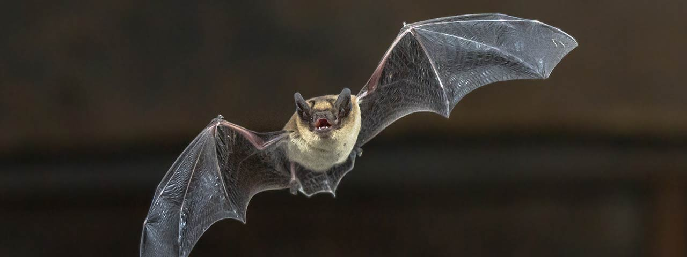
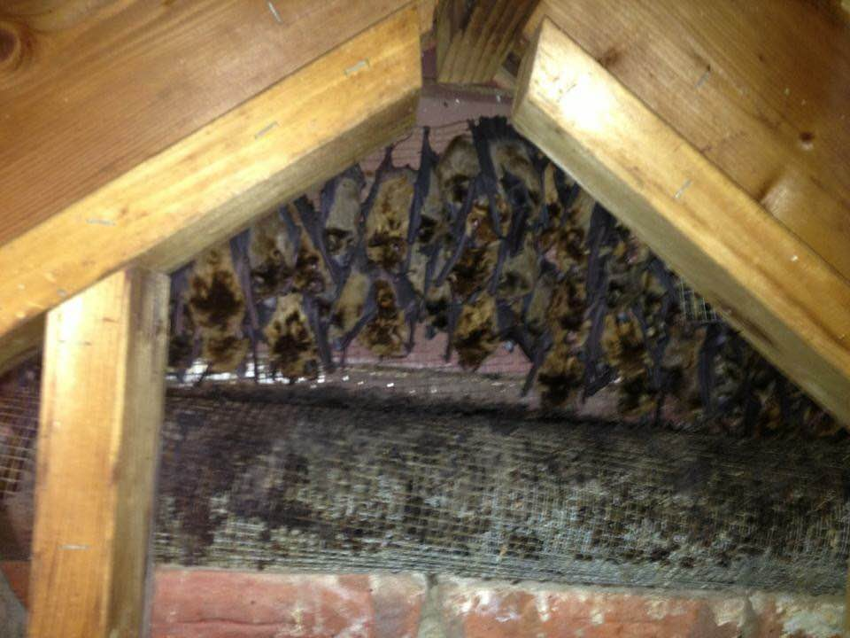
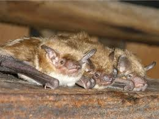
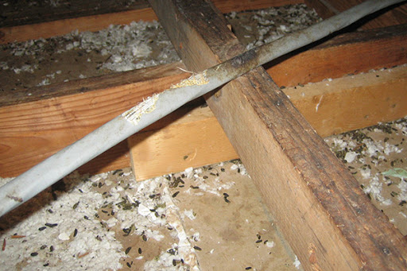
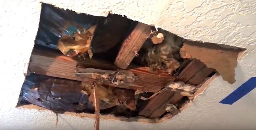
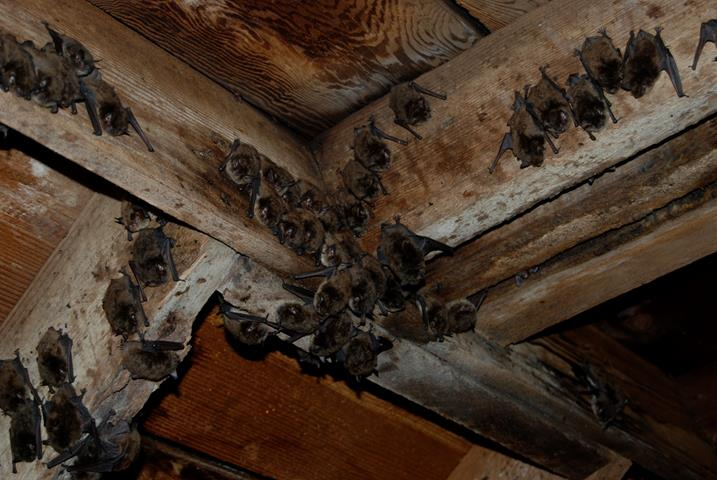
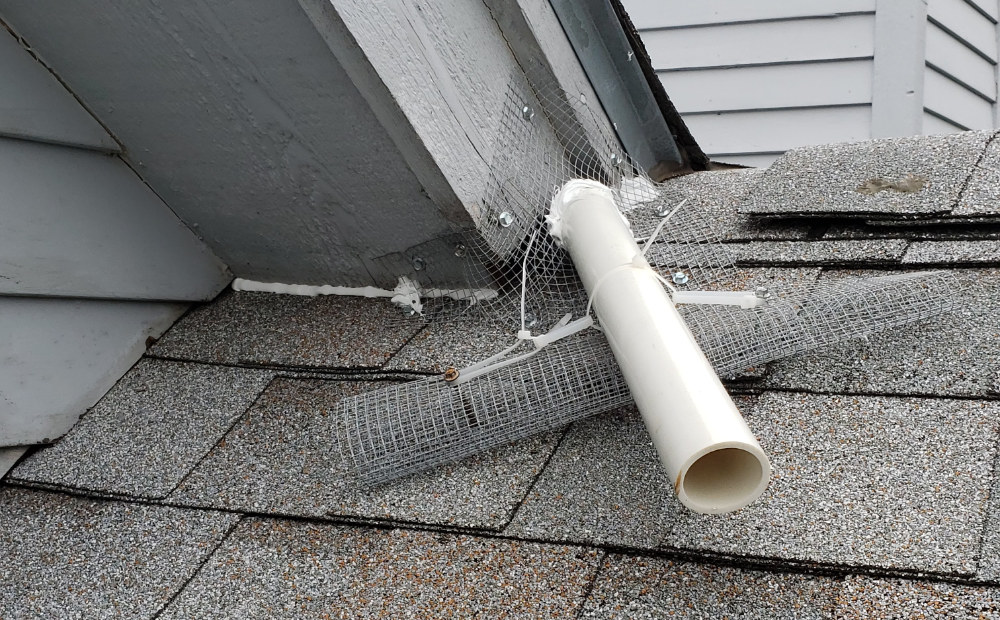
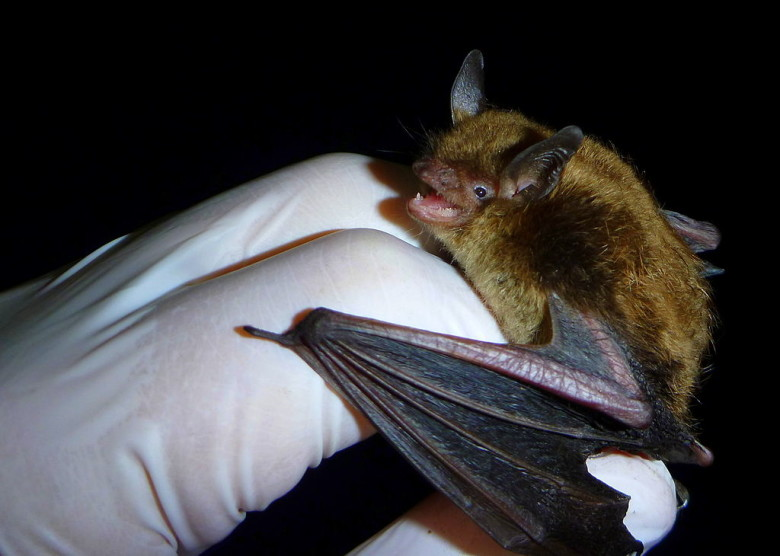
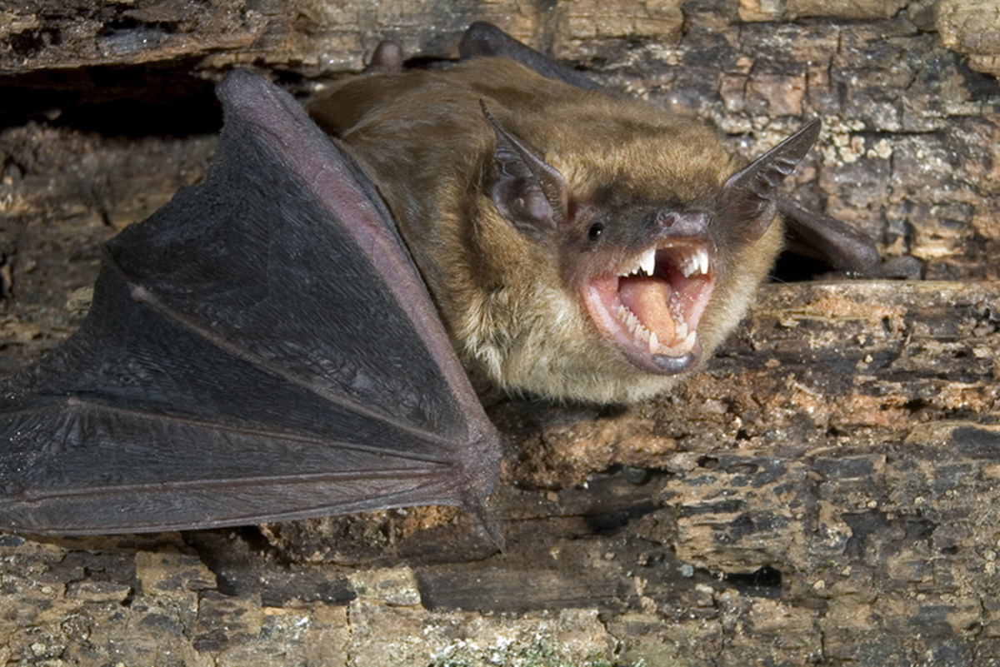

Bats Causing Damage In The Attic
Bats can cause significant damage in the attic, however it isn’t always a disaster. It depends on lots of factors, such as the length of time the bats have remained in the attic, and the variety of bats. Bats could be considered a helpful animal, gentle and beneficial to the environment. Bats eat a lot of insects, which home owners seem to appreciate.

The only real problem with a colony of bats in the attic is that each bat poops 20-30 times daily. Just like any wildlife bats will leave and return to their ‘house’. Bats will continue to leave guano as it marks their territory. If you have a big colony, the guano droppings can collect. We have personally been inside attics which were filled with feces over 2 feet deep throughout the attic, triggering the ceilings to collapse. The smell of a colony of bats and their guano can be very strong, and in accumulation, the guano can be a health danger – a location for mold to grow, and can cause potential respiratory infections.
For these factors, many people want to remove the bats in the attic prior to the problem gets out of hand. Do not touch them! Any bat can carry disease and ever attack if that bat feels threatened. Bat guano left can also motivate the development of mold, bring in bugs like cockroaches, and contains an aroma that will encourage brand-new bats to enter the attic in the future.
How To Spot Bat Damage & Guano?

Just knowing that bats have entered your house leads us to believe damage is occurring. Attics are not built with the intention to house bats and are equipped to protect building materials from the bats and or other wildlife. A few tell tell signs will help any property owner identify bats in the attic. If the home owner can provide technicians with information on the bats’ whereabouts, the removal process will finish faster.
One of the most obvious signs is bat guano droppings in one spot of the attic or near an entry hole in the attic. Since bats enter and exit frequently, the areas that have the most traffic will also contain the highest amount of guano droppings. Bat feces will also be found in places such as on attic insulation.

Bats also tend to destroy attics by urinating on insulation and on the wood framing of the attic. Stains on the walls are a sign that bats are inside the attic. Bat problems typically need pest control because feces and urine will leave a strong ammonia like odor. If the infestation contains a large number of bats, the odor could even be detected from outside of the attic. Bat feces odor is strong smelling and easily recognizable.
A more obvious sign is hearing squeaking noises and bats scratching in the attic. A bat is most active during the night because bats are nocturnal animal so before you go to bed, pay attention to sounds in the attic. If you suspect bats to be living in your attic, you should also check outside of your house. Seeing live bats flying around or a dead bat on your property will help you determine what is living in your house.
What We Do
Our pest control process is designed to rid your home of bats and other wildlife in the most efficient and fastest way possible. We also pride ourselves on customer service and being as transparent as possible during our service. If you have any bat related questions, feel free to call and ask on our of trained technicians for bat removal information. A typical bat removal procedure consists of:
- home inspection
- detailed outline of how the bats are entering and how many are in the home
- detailed plan of equipment needed and how it will be used to remove the bats
- implementation of equipment and sealing up and entry points (prevent more bats from entering)
- final check of bats in the attic and removal of equipment
Why Call A Professional?

Majority of home owners are not equipped to rid their home of bats and that is perfectly fine! Bats are a protected species thus nobody is allowed to kill a bat. We use humane measures such as bat exclusion devices to allow an exit for the bats but prevents reentry. We have been removing bats from attics for over 15 years and our experience accompanies us on every job. Call us for a professional and experience removal service.
Finding Bat Removal Near You

Depending on where you are located, finding a bat removal company near you could be a difficult task. We understand that bat removal is a time sensitive pest issue and were here to help. We will provide any bat removal information a customer needs. Call or check out our map below to see if we can assist you with your bat removal needs.